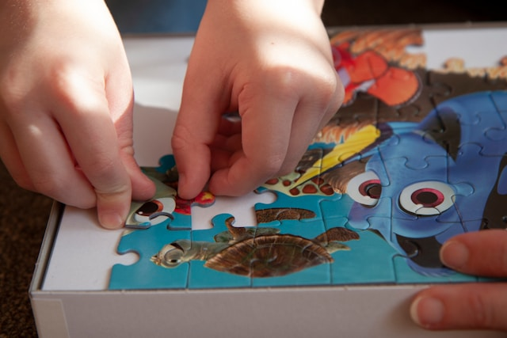
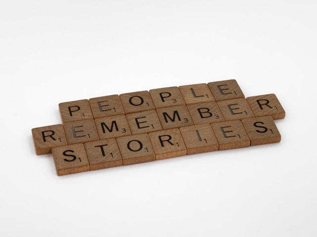
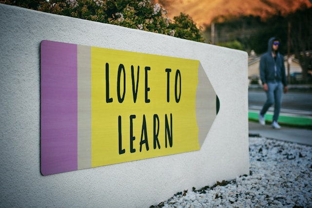

Boost Your Brainpower: 7 Fun Activities to Get Smarter
Are you ready to enhance your intelligence? Get ready for an exciting adventure to unlock your inner genius! By
trying out these enjoyable activities, you'll give your brain a boost and impress everyone with your smarts. Say
goodbye to boredom and let's dive into the easy and fun activities that will make you smarter!
Puzzle Fun
Challenge your mind with puzzles! Whether it's crosswords, Sudoku, or brain teasers, puzzles make your brain work and
improve your problem-solving skills. Dive into a world of riddles, logic games, and mind-bending challenges that are not
only entertaining but also sharpen your thinking abilities. Solve intricate puzzles and unlock new levels of
intelligence and mental agility.

Tech Exploration
Embrace the digital world and discover the wonders of technology! Immerse yourself in the realm of coding, learn a
programming language, or play around with the latest gadgets and innovations. By engaging in tech exploration, you'll
gain valuable skills and enhance your analytical thinking, creativity, and adaptability in our rapidly evolving,
tech-focused world. Unleash your inner tech enthusiast and embark on a journey of endless possibilities.
Memory Games
Train your memory while having a great time! Engage in a variety of memory games that test your ability to remember and
recall information. From memory card games to "Simon Says" challenges and memory exercises, these activities will
improve your memory skills and give your mind a powerful boost. Enhance your cognitive abilities and impress others with
your remarkable recall and mental agility.

Exciting Trivia
Gather your friends for an exhilarating trivia night! Test your knowledge in different subjects and enjoy a friendly
competition filled with intriguing facts and questions. Trivia nights are not only loads of fun but also a fantastic way
to expand your general knowledge, learn fascinating tidbits, and develop a well-rounded intelligence. Sharpen your
memory, improve your research skills, and become the trivia champion among your peers.
Creative Adventures
Unleash your creativity and boost your intelligence through a wide range of artistic activities. Paint breathtaking
masterpieces, draw intricate designs, write captivating stories, or play a musical instrument. Engaging in creative
pursuits enhances your problem-solving abilities, improves focus, and encourages innovative thinking. Let your
imagination run wild, express yourself through art, and watch your intelligence soar to new heights.

Language Discovery
Open the door to new cultures and languages! Embark on the exciting journey of learning a foreign language or explore
more about your own language. Language learning enhances your thinking skills, improves memory retention, and broadens
your understanding of different cultures. Dive into grammar, vocabulary, and pronunciation, and uncover the beauty of
communication. Mastering a language is an impressive skill that adds flair to your intelligence and opens up a world of
opportunities.

Interactive Science Experiments
Become a scientist in your own home! Experience the thrill of hands-on science experiments that transform learning into
an exciting adventure. Engage in a wide array of interactive activities, from captivating chemical reactions to physics
experiments that defy gravity. These hands-on experiences ignite your curiosity, improve analytical thinking, and deepen
your understanding of the world around you. Unleash your inner scientist, conduct experiments, and uncover the wonders
of the universe right from your own home laboratory.
Get ready to boost your brainpower through these enjoyable activities. Say goodbye to boredom and embrace the fun
of puzzles, tech exploration, memory games, trivia, creative adventures, language discovery, and interactive
science experiments. These activities willnot only make you smarter but also provide endless entertainment and
satisfaction. So, dive in, have fun, and let your intelligence shine brightly. Your journey to becoming smarter
starts now!